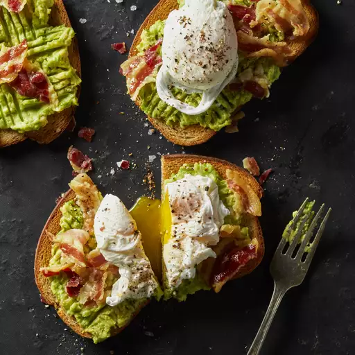

Avocado Toast with Crumbled Crispy Pancetta

Description
If you're expecting company for brunch, cook up this recipe for gourmet avocado toast with crumbled crispy pancetta and poached egg on rye.
Ingredients
- 1 slice pancetta, diced
- 1 egg
- 1 slice prosciutto
- 1 slice rye bread, toasted
- 1/2 ripe avocado, diced, or to taste
- salt and ground black pepper to taste
Steps
- Place pancetta in a large skillet and cook over medium-high heat, turning occasionally, until evenly browned, about 5 minutes.
- Drain on a paper towel.
- Fill a large saucepan with 2 to 3 inches of water and bring to a boil. Reduce the heat to medium-low and keep the water at a gentle simmer.
- Crack egg into a small bowl then gently slip egg into the simmering water, holding the bowl just above the surface of water. Cook until egg white is firm and the yolk thickens, 2 1/2 to 3 minutes.
- Remove the egg from the water with a slotted spoon and dab on a paper towel to remove excess water.
- Place prosciutto on the toast. Spread a generous layer of avocado on top; season with salt and pepper. Add pancetta; top with the poached egg.
Back to the main page